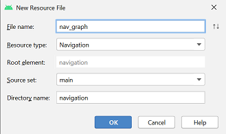
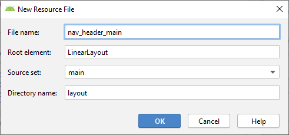
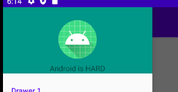
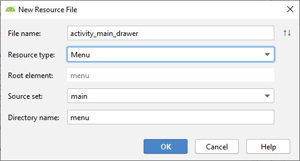
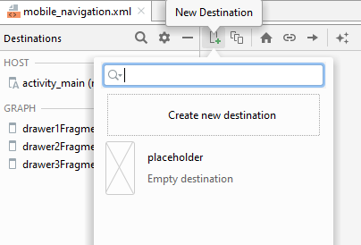
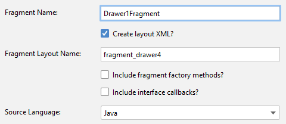
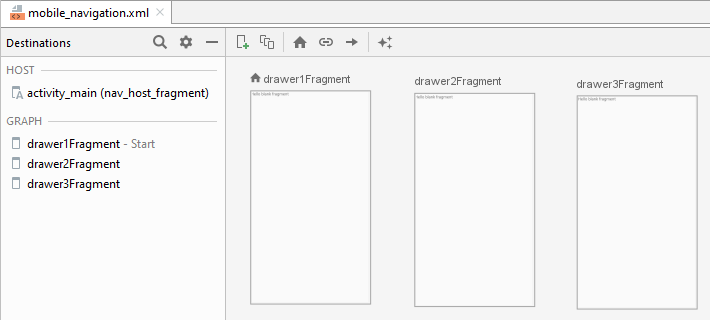
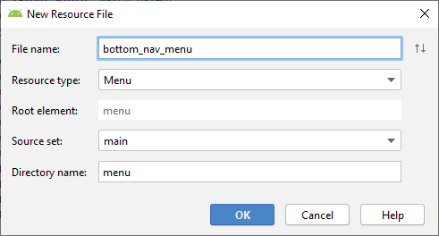

Navigation
El componente
Navigation
incluye una clase NavigationUI. Esta clase contiene métodos estáticos que
administran la navegación con el NavigationView, el BottomNavigationView
y el OptionsMenu.

Además de usar estos elementos de navegación, en esta práctica usaremos también
la navegación mediante Tabs (o pestañas), usando los elementos TabLayout
y ViewPager, aunque estos no están incluidos en el
componente Navigation.

Desarrollaremos una app que permitirá navegar entre destinos usando todos estos elementos.
 https://github.com/gerardfp/navigation
https://github.com/gerardfp/navigation
Crea el proyecto
En el asistente de "Nueva Activity", Android Studio proporciona plantillas para crear
Activities que incluyen estos componentes
de navegación. Sin embargo, esta vez lo haremos "desde 0", para comprender todos
los elementos que intervienen.
-
Selecciona "Empty Activity" como plantilla para la MainActivity
-
Añade las dependencias para incluir el componente Navigation
build.gradle (Module: app)
dependencies {
implementation 'com.google.android.material:material:1.0.0'
implementation 'androidx.navigation:navigation-fragment:2.3.0'
implementation 'androidx.navigation:navigation-ui:2.3.0'
}
-
Crea también el grafo de navegación: res/navigation/nav_graph.xml

NavigationMenu
El NavigationView (más conocido como "Drawer menu") es el menú de navegación que
suele aparecer por la izquierda de la app cuando se pulsa el icono Hamburger .
En esta app usaremos el NavigationView para navegar a 3 pantallas. Empezaremos creando estas 3 pantallas.
Normalmente tiene dos partes: la cabecera y el menú:

-
El layout de la cabecera se crea en un fichero a parte, y luego se
enlaza con el menú. Definiremos la cabecera en el archivo res/layout/nav_header_main.xml.
Haz clic-derecho sobre la carpeta res/layout y ve a New > Layout Resource File e
introduce el File name: nav_header_main

Ahora añadiremos una imagen y un texto que se verán en la cabecera del menu:

res/layout/nav_header_main.xml
<?xml version="1.0" encoding="utf-8"?>
<LinearLayout xmlns:android="http://schemas.android.com/apk/res/android"
xmlns:app="http://schemas.android.com/apk/res-auto"
android:layout_width="match_parent"
android:layout_height="wrap_content"
android:background="#009688"
android:gravity="center"
android:orientation="vertical">
<ImageView
android:id="@+id/imageView"
android:layout_width="wrap_content"
android:layout_height="wrap_content"
android:paddingTop="48dp"
app:srcCompat="@mipmap/ic_launcher_round" />
<TextView
android:layout_width="wrap_content"
android:layout_height="wrap_content"
android:paddingTop="8dp"
android:text="Android is HARD" />
</LinearLayout>
-
Los items del menu también se definen en un fichero a parte. Esta vez
en un fichero de recurso menú: res/menu/activity_main_drawer.xml
Haz clic-derecho sobre la carpeta res y ve a
New > Android Resource File e
introduce el File name: nav_header_main,
y selecciona Resource type: Menu.

- Añade los siguientes estilos al fichero res/values/styles.xml:
<style name="AppTheme.NoActionBar">
<item name="windowActionBar">false</item>
<item name="windowNoTitle">true</item>
</style>
<style name="AppTheme.AppBarOverlay" parent="ThemeOverlay.AppCompat.Dark.ActionBar" />
<style name="AppTheme.PopupOverlay" parent="ThemeOverlay.AppCompat.Light" />
Añade el siguiente atributo a la MainActivity en el fichero AndroidManifest.xml:
android:theme="@style/AppTheme.NoActionBar"
Debe quedar algo así:
<activity
android:name=".MainActivity"
android:theme="@style/AppTheme.NoActionBar">
<intent-filter>
<action android:name="android.intent.action.MAIN" />
<category android:name="android.intent.category.LAUNCHER" />
</intent-filter>
</activity>
- Modifica el archivo de layout de la MainActivity (res/layout/activity_main.xml) para añadir la Toolbar, el NavigationView (Drawer) y el NavHost:
<?xml version="1.0" encoding="utf-8"?>
<androidx.drawerlayout.widget.DrawerLayout xmlns:android="http://schemas.android.com/apk/res/android"
xmlns:app="http://schemas.android.com/apk/res-auto"
xmlns:tools="http://schemas.android.com/tools"
android:id="@+id/drawer_layout"
android:layout_width="match_parent"
android:layout_height="match_parent"
android:fitsSystemWindows="true"
tools:openDrawer="start">
<androidx.coordinatorlayout.widget.CoordinatorLayout
android:layout_width="match_parent"
android:layout_height="match_parent"
tools:context=".MainActivity">
<com.google.android.material.appbar.AppBarLayout
android:layout_width="match_parent"
android:layout_height="wrap_content"
android:theme="@style/AppTheme.AppBarOverlay">
<androidx.appcompat.widget.Toolbar
android:id="@+id/toolbar"
android:layout_width="match_parent"
android:layout_height="?attr/actionBarSize"
android:background="?attr/colorPrimary"
app:popupTheme="@style/AppTheme.PopupOverlay" />
</com.google.android.material.appbar.AppBarLayout>
<androidx.constraintlayout.widget.ConstraintLayout
android:layout_width="match_parent"
android:layout_height="match_parent"
app:layout_behavior="@string/appbar_scrolling_view_behavior">
<fragment
android:id="@+id/nav_host_fragment"
android:name="androidx.navigation.fragment.NavHostFragment"
android:layout_width="match_parent"
android:layout_height="match_parent"
app:defaultNavHost="true"
app:layout_constraintLeft_toLeftOf="parent"
app:layout_constraintRight_toRightOf="parent"
app:layout_constraintTop_toTopOf="parent"
app:navGraph="@navigation/mobile_navigation" />
</androidx.constraintlayout.widget.ConstraintLayout>
</androidx.coordinatorlayout.widget.CoordinatorLayout>
<com.google.android.material.navigation.NavigationView
android:id="@+id/nav_view"
android:layout_width="wrap_content"
android:layout_height="match_parent"
android:layout_gravity="start"
android:fitsSystemWindows="true"
app:headerLayout="@layout/nav_header_main"
app:menu="@menu/activity_main_drawer" />
</androidx.drawerlayout.widget.DrawerLayout>
- Añade el siguiente código a la MainActivity.java para configurar la Toolbar y el NavigationView (Drawer):
import android.os.Bundle;
import android.view.Menu;
import com.google.android.material.navigation.NavigationView;
import androidx.appcompat.app.AppCompatActivity;
import androidx.appcompat.widget.Toolbar;
import androidx.drawerlayout.widget.DrawerLayout;
import androidx.navigation.NavController;
import androidx.navigation.Navigation;
import androidx.navigation.ui.AppBarConfiguration;
import androidx.navigation.ui.NavigationUI;
public class MainActivity extends AppCompatActivity {
private AppBarConfiguration mAppBarConfiguration;
@Override
protected void onCreate(Bundle savedInstanceState) {
super.onCreate(savedInstanceState);
setContentView(R.layout.activity_main);
Toolbar toolbar = findViewById(R.id.toolbar);
setSupportActionBar(toolbar);
DrawerLayout drawer = findViewById(R.id.drawer_layout);
NavigationView navigationView = findViewById(R.id.nav_view);
mAppBarConfiguration = new AppBarConfiguration.Builder()
.setDrawerLayout(drawer)
.build();
NavController navController = Navigation.findNavController(this, R.id.nav_host_fragment);
NavigationUI.setupActionBarWithNavController(this, navController, mAppBarConfiguration);
NavigationUI.setupWithNavController(navigationView, navController);
}
@Override
public boolean onCreateOptionsMenu(Menu menu) {
getMenuInflater().inflate(R.menu.main, menu);
return true;
}
@Override
public boolean onSupportNavigateUp() {
NavController navController = Navigation.findNavController(this, R.id.nav_host_fragment);
return NavigationUI.navigateUp(navController, mAppBarConfiguration)
|| super.onSupportNavigateUp();
}
}
NavigationView (Drawer)
Añadiremos tres Destinaciones (Fragments) al grafo de navegacion res/navigation/mobile_navigation.xml:
Llamaremos a estas destinaciones: Drawer1Fragment, Drawer2Fragment, Drawer3Fragment



Haremos que las tres destinaciones (fragments) que hemos creado, sean accesibles desde el NavigationView (Drawer)
- Añade los items al menu del drawer
res/menu/activity_main_drawer.xml:
<?xml version="1.0" encoding="utf-8"?>
<menu xmlns:android="http://schemas.android.com/apk/res/android">
<item
android:id="@+id/drawer1Fragment"
android:title="Drawer 1" />
<item
android:id="@+id/drawer2Fragment"
android:title="Drawer 2" />
<item
android:id="@+id/drawer3Fragment"
android:title="Drawer 3" />
</menu>
- En el archivo
MainActivity.java, establece en la configuracion de la AppBar las destinaciones que serán "Top Level":
mAppBarConfiguration = new AppBarConfiguration.Builder(
R.id.drawer1Fragment, R.id.drawer2Fragment
)
.setDrawerLayout(drawer)
.build();
- Opcionalmente diseña una cabecera para el Drawer (
res/layout/nav_header_main.xml):
<?xml version="1.0" encoding="utf-8"?>
<LinearLayout xmlns:android="http://schemas.android.com/apk/res/android"
xmlns:app="http://schemas.android.com/apk/res-auto"
android:layout_width="match_parent"
android:layout_height="wrap_content"
android:gravity="center"
android:orientation="vertical">
<ImageView
android:id="@+id/imageView"
android:layout_width="wrap_content"
android:layout_height="wrap_content"
android:paddingTop="48dp"
app:srcCompat="@mipmap/ic_launcher_round" />
<TextView
android:layout_width="wrap_content"
android:layout_height="wrap_content"
android:paddingTop="8dp"
android:text="Android is" />
<TextView
android:id="@+id/textView"
android:layout_width="wrap_content"
android:layout_height="wrap_content"
android:textSize="24sp"
android:textStyle="bold"
android:text="HARD" />
</LinearLayout>
Debería quedar esta app:

BottomNavigationView
Añadiremos tres nuevas destinaciones que serán accesibles desde el BottomViewNavigation.
Las llamaremos Bottom1Fragment, Bottom2Fragment y Bottom3Fragment:
Como paso previo, crea estas 3 destinaciones:

- Crea el archivo de menu para el BottomNavigationView (
res/menu/bottom_nav_menu.xml):

Añade los 3 items al menu, para cada una de las destinaciones (el id del item debe coincidir con el id de la destinación):
<?xml version="1.0" encoding="utf-8"?>
<menu xmlns:android="http://schemas.android.com/apk/res/android">
<item
android:id="@+id/bottom1Fragment"
android:title="Bottom 1" />
<item
android:id="@+id/bottom2Fragment"
android:title="Bottom 2" />
<item
android:id="@+id/bottom3Fragment"
android:title="Bottom 3" />
</menu>
- Añade el elemento BottomNavigationView al layout de la MainActivity (
res/layout/activity_main.xml):
Es importante que lo añadas justo antes del NavHostFragment
<com.google.android.material.bottomnavigation.BottomNavigationView
android:id="@+id/bottom_nav_view"
android:layout_width="0dp"
android:layout_height="wrap_content"
android:layout_marginStart="0dp"
android:layout_marginEnd="0dp"
android:background="?android:attr/windowBackground"
app:layout_constraintBottom_toBottomOf="parent"
app:layout_constraintLeft_toLeftOf="parent"
app:layout_constraintRight_toRightOf="parent"
app:menu="@menu/bottom_nav_menu" />
- Configura el BottomNavigationView en la
MainActivity.java:
Añade al final del metodo onCreate() el siguiente código:
BottomNavigationView bottomNavView = findViewById(R.id.bottom_nav_view);
NavigationUI.setupWithNavController(bottomNavView, navController);
Opcionalmente, configura estas 3 destinaciones como "Top Level":
mAppBarConfiguration = new AppBarConfiguration.Builder(
R.id.drawer1Fragment, R.id.drawer2Fragment,
R.id.bottom1Fragment, R.id.bottom2Fragment, R.id.bottom3Fragment
)
.setDrawerLayout(drawer)
.build();
- Opcionalmente, añade unos iconos en cada item del menu del BottomNavigationView (
res/menu/bottom_nav_menu.xml):
Establece los iconos a los items:
<?xml version="1.0" encoding="utf-8"?>
<menu xmlns:android="http://schemas.android.com/apk/res/android">
<item
android:id="@+id/bottom1Fragment"
android:icon="@drawable/ic_favorite_black_24dp"
android:title="Bottom 1" />
<item
android:id="@+id/bottom2Fragment"
android:icon="@drawable/ic_favorite_black_24dp"
android:title="Bottom 2" />
<item
android:id="@+id/bottom3Fragment"
android:icon="@drawable/ic_favorite_black_24dp"
android:title="Bottom 3" />
</menu>
Debería quedar así:

OptionsMenu
Crea el archivo de menu para el OptionsMenu (res/menu/main.xml):

Añadiremos tres nuevas destinaciones que serán accesibles desde el Options Menu.
Las llamaremos Options1Fragment, Options2Fragment y Options3Fragment:
Crea estas 3 destinaciones:
- Añade los ítems al Options Menu (
res/menu/main.xml):
<?xml version="1.0" encoding="utf-8"?>
<menu xmlns:android="http://schemas.android.com/apk/res/android">
<item
android:id="@+id/options1Fragment"
android:icon="@drawable/ic_favorite_black_24dp"
android:title="Options 1" />
<item
android:id="@+id/options2Fragment"
android:icon="@drawable/ic_favorite_black_24dp"
android:title="Options 2" />
<item
android:id="@+id/options3Fragment"
android:icon="@drawable/ic_favorite_black_24dp"
android:title="Options 3" />
</menu>
- Configura la navegación del Options Menu en la
MainActivity.java:
Añade el siguiente callback a la clase MainActivity:
@Override
public boolean onOptionsItemSelected(MenuItem item) {
NavController navController = Navigation.findNavController(this, R.id.nav_host_fragment);
return NavigationUI.onNavDestinationSelected(item, navController)
|| super.onOptionsItemSelected(item);
}
- Opcionalmente añade estas destinaciones como Top Level:
mAppBarConfiguration = new AppBarConfiguration.Builder(
R.id.drawer1Fragment, R.id.drawer2Fragment,
R.id.bottom1Fragment, R.id.bottom2Fragment, R.id.bottom3Fragment,
R.id.options1Fragment, R.id.options2Fragment, R.id.options3Fragment
)
.setDrawerLayout(drawer)
.build();
Debería quedar así:

TabLayout y ViewPager


A modo de ejemplo, añadiremos en el fragment Bottom2Fragment un TabLayout y un ViewPager. También crearemos dos fragments (PageAFragment y PageBFragment) que se mostraran en el ViewPager.
El primer paso será crear los dos fragments PageAFragment y PageBFragment.

ViewPager
Empezaremos con el ViewPager, este se encargará de mostrar bien el PageAFragment o el PageBFragment. El usuario navegará entre uno y otro haciendo SWIPE.
- Añade el ViewPager al layout del fragment padre (
res/layout/fragment_bottom2.xml):
<?xml version="1.0" encoding="utf-8"?>
<FrameLayout xmlns:android="http://schemas.android.com/apk/res/android"
xmlns:tools="http://schemas.android.com/tools"
android:layout_width="match_parent"
android:layout_height="match_parent"
xmlns:app="http://schemas.android.com/apk/res-auto"
tools:context=".Bottom2Fragment">
<androidx.viewpager.widget.ViewPager
android:id="@+id/viewPager"
android:layout_width="match_parent"
android:layout_height="wrap_content"/>
</FrameLayout>
- Crea el PagerAdapter en el fichero
Bottom2Fragment.java:

class DemoPagerAdapter extends FragmentPagerAdapter {
public DemoPagerAdapter(@NonNull FragmentManager fm, int behavior) {
super(fm, behavior);
}
@NonNull
@Override
public Fragment getItem(int position) {
return null;
}
@Override
public int getCount() {
return 0;
}
}
- En el método
getItem() se debe retornar una instancia del Fragment que se debe mostrar en la posicion determinada por el parámetro position.
En nuestro caso en la posición 0 va el PageAFragment, y en la posición 1 va el PageBFragment
- En el método
getCount() se debe retornar cuántos fragments hay en total. En nuestro caso 2.
El PagerAdapter queda finalmente así:
class DemoPagerAdapter extends FragmentPagerAdapter {
public DemoPagerAdapter(@NonNull FragmentManager fm, int behavior) {
super(fm, behavior);
}
@NonNull
@Override
public Fragment getItem(int position) {
if(position == 0) return new PageAFragment();
return new PageBFragment();
}
@Override
public int getCount() {
return 2;
}
}
- Establece el Adaptador al ViewPager:
Añade al método onCreateView() el siguiente código:
ViewPager viewPager = view.findViewById(R.id.viewPager);
viewPager.setAdapter(new DemoPagerAdapter(getChildFragmentManager(), FragmentPagerAdapter.BEHAVIOR_RESUME_ONLY_CURRENT_FRAGMENT));
Debería quedar así:

TabLayout
Añadiremos un TabLayout para que indique al usuario en qué página se encuentra:
- Añade el TabLayout al layout del Bottom2Fragment (
res/layout/fragment_bottom2.xml):
Añádelo dentro del elemento ViewPager.
<androidx.viewpager.widget.ViewPager
android:id="@+id/viewPager"
android:layout_width="match_parent"
android:layout_height="wrap_content">
<com.google.android.material.tabs.TabLayout
android:id="@+id/tabLayout"
android:layout_width="match_parent"
android:layout_height="wrap_content"/>
</androidx.viewpager.widget.ViewPager>
- Conecta el TabLayout con el ViewPager para que ambos vayan sincronizados.
En el fichero Bottom2Fragment.java añade el siguiente código en el onViewCreated():
TabLayout tabLayout = view.findViewById(R.id.tabLayout);
tabLayout.setupWithViewPager(viewPager);
- Modifica el PagerAdapter para que muestre los títulos de los tabs correspondientes:
Añade el siguiente método a la clase DemoPagerAdapter:
@Override
public CharSequence getPageTitle(int position) {
if(position == 0) return "A";
return "B";
}
Debería quedar así:

NOTA: Si quieres que el TabLayout quede "integrado" en la AppBar, puedes cambiarle el color de fondo para que quede el mismo que la AppBar. Tendrás que eliminar la "elevación" (el sombreado) de la AppBar:
- Cambia los colores del TabLayout (
res/layout/fragment_bottom2.xml):
<com.google.android.material.tabs.TabLayout
android:id="@+id/tabLayout"
android:layout_width="match_parent"
android:layout_height="wrap_content"
android:background="?attr/colorPrimary"
app:tabTextColor="#CCC"
app:tabSelectedTextColor="#FFF"/>
- Elimina la elevación de la AppBar (
res/layout/activity_main.xml):
<com.google.android.material.appbar.AppBarLayout
android:layout_width="match_parent"
android:layout_height="wrap_content"
android:theme="@style/AppTheme.AppBarOverlay"
app:elevation="0dp">